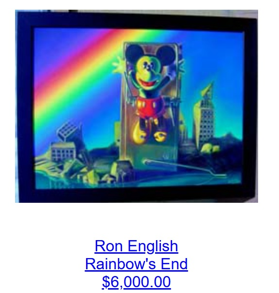

Exhibitions
Ron English, Mark Mothersbaugh & Daniel Johnston: 3 Man Art Exhibition, Copro/Nason Gallery, Santa Monica, California, US, September 17–October 15, 2005.
Literature
Ron English, Abject Expressionism: The Art of Ron English (San Francisco: Last Gasp, 2007), p. 139. ISBN 978-0867196894.
Notes
This work appears on Copro/Nason’s page for Ron English, Daniel Johnston, Mark Mothersbaugh.
Ancillary Documentation
The following material documents the work’s appearance on Copro/Nason’s exhibition page.
